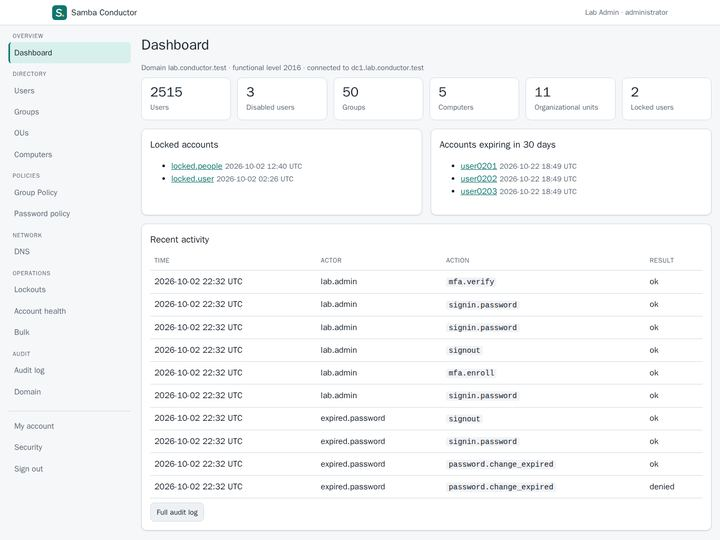
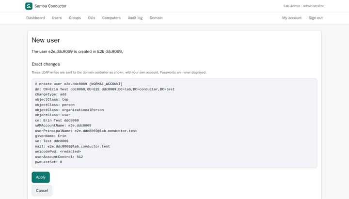
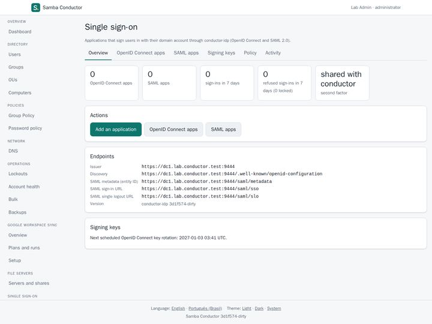
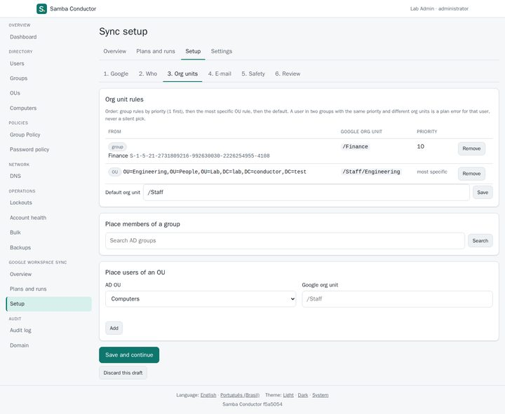
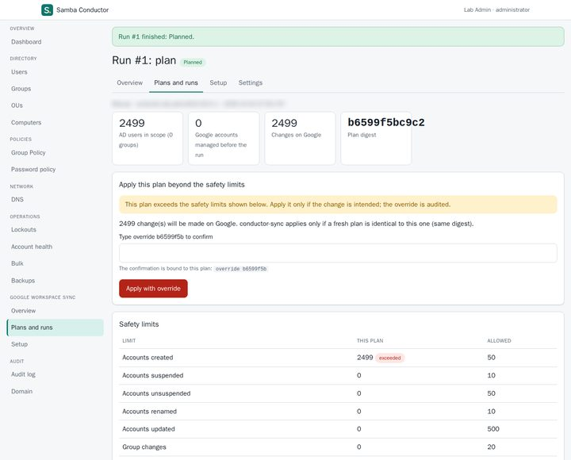
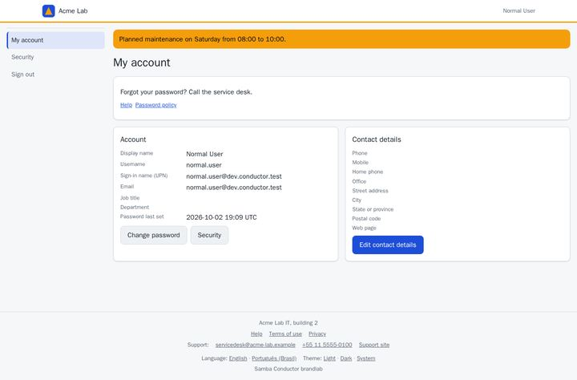
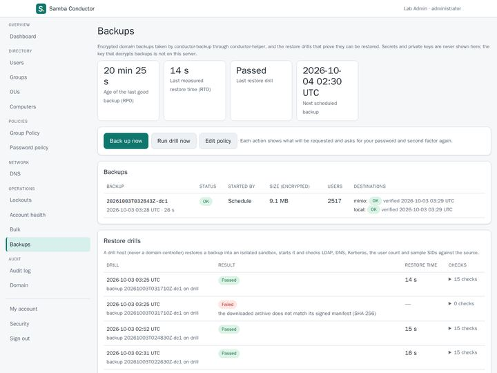

Project
Samba Conductor
A Samba Active Directory domain, run from a web console. Administrators manage users, groups, DNS, Group Policy and backups from a browser; everyone in the domain gets a self-service portal; other applications sign in with the domain account.

What it does
One console for the domain and the people in it.
Every directory operation runs with the signed-in person's own identity, so the domain's own access rules apply. Every change shows the exact directory writes before it is applied, and lands in an audit log that cannot be rewritten without it showing.
-
The domain controller, in a browser
Users, groups, OUs, computers, DNS zones and records, Group Policy links, password policies, lockouts across domain controllers, account health and bulk changes from CSV files. Two-factor sign-in, required for administrators.
-
Single sign-on with OIDC and SAML
An OpenID Connect provider and SAML 2.0 identity provider backed by the domain, with guided presets for common applications, a consent screen, staged signing key rotation and sign-in activity per application.
-
Google Workspace sync and import
Provisioning from the domain to Google Workspace: plan first, dry run by default, safety limits, and accounts are suspended, never deleted. A one-time import creates the domain's users and groups for a company that already uses Google Workspace.
-
Self-service and connected accounts
Everyone in the domain edits their own profile, changes their password and manages their second factors and security keys. With the sync on, people activate their own account on each connected service and set a new password for it.
-
Your own branding
The organization's name, logos, colors and texts on the self-service portal and the sign-in pages, previewed in the light and dark theme with a contrast check before it is saved.
-
Backups and file servers
Encrypted online backups of the domain, restore tooling and automated restore drills that prove a backup can be restored. A small agent manages shares and their permissions on domain-member file servers.
Screens
Captured in our test lab with made-up people, names and addresses. Select an image to see it larger. More in the gallery.
-

Exact changes: the LDAP writes are shown before you apply them. Passwords are never displayed. -

Single sign-on with OpenID Connect and SAML 2.0, using the domain account. -

Google Workspace sync setup: who goes to which Google org unit, by AD group or OU. -

A plan over the safety limits waits for a typed confirmation bound to that exact plan. -

The self-service portal with an organization's branding. -

Encrypted backups and restore drills, with the measured restore time.


Status
Pre-release, being validated.
Checked in the lab
- The whole console, desktop and mobile, against a domain with two domain controllers.
- A full-forest restore exercise from encrypted backups.
- Single sign-on with an independent OpenID Connect client, Grafana and a SAML service provider.
- Install, upgrade and removal of the packages, including on Basalt OS with SELinux enforcing.
Not yet
- A tagged release. Today's packages are built from the main branches for testing.
- A stable configuration format: settings may still change between builds.
The lab runs are written down in each repository, in the docs/usage-*.md
files, with what was set up, run and checked.
Install
Packages for Debian, Ubuntu, Fedora and Basalt OS.
Samba Conductor runs on a Samba AD domain controller (Samba 4.19 or later, functional level 2016), as native systemd services. Packages are signed with the OpenBasalt release key. Before you trust the key, check that its fingerprint is 3601 7348 42BD 4E48 2D19 DE4A E4EE D5EC A395 B302, and stop if it differs.
Debian 13 and Ubuntu (APT)
Debian 13, Ubuntu 24.04 and 26.04, amd64.
curl -fsSLo /tmp/openbasalt-release-key.asc https://obpkg.org/keys/openbasalt-release-key.asc
gpg --show-keys --with-fingerprint /tmp/openbasalt-release-key.asc
sudo install -d -m 0755 /etc/apt/keyrings
sudo gpg --dearmor -o /etc/apt/keyrings/openbasalt.gpg /tmp/openbasalt-release-key.asc
sudo chmod 0644 /etc/apt/keyrings/openbasalt.gpg
printf 'Types: deb\nURIs: https://obpkg.org/apt\nSuites: stable\nComponents: main\nSigned-By: /etc/apt/keyrings/openbasalt.gpg\n' |
sudo tee /etc/apt/sources.list.d/openbasalt.sources
sudo apt update
sudo apt install conductorFedora 44 and Basalt OS (RPM)
On Basalt OS the basalt-tools repository is configured by default. On Fedora 44, add it
in /etc/yum.repos.d/basalt-tools.repo:
[basalt-tools]
name=Basalt OS tools $releasever - $basearch
baseurl=https://obpkg.org/basalt-tools/$releasever/$basearch/
enabled=1
gpgcheck=1
repo_gpgcheck=1
gpgkey=https://obpkg.org/keys/openbasalt-release-key.ascThe first time dnf uses the key it shows the fingerprint and asks to import it: compare it with the one above. Then:
sudo dnf install conductorThe SELinux policy package comes with it wherever the targeted policy is installed.
Next steps
The same repositories carry every component: conductor,
conductor-idp, conductor-sync, conductor-backup and
conductor-files. Nothing is enabled after installing. The web certificate,
conductor setup, starting the services and enrolling the first administrator
are in the install guides:
Source and documentation
Seven repositories, one family.
Each component lives in its own repository and is deployed on its own. Start with the documentation repository: architecture, packaging, release verification and testing.
- openbasalt/samba-conductor-docs: documentation across the components
- openbasalt/samba-conductor: the web console, self-service and the privileged helper
- openbasalt/samba-conductor-idp: OpenID Connect and SAML 2.0 identity provider
- openbasalt/samba-conductor-sync: provisioning to Google Workspace
- openbasalt/samba-conductor-backup: encrypted backups, restore and restore drills
- openbasalt/samba-conductor-files: shares on domain-member file servers
- openbasalt/samba-conductor-ad: the Go library for Samba AD access
License
Apache License 2.0.
Every Samba Conductor repository is licensed under the Apache License, Version 2.0. Security problems go through each repository's SECURITY.md, not public issues.
Samba Conductor exists because of Samba and the people who build it. It is an independent project, not affiliated with or endorsed by the Samba Team.